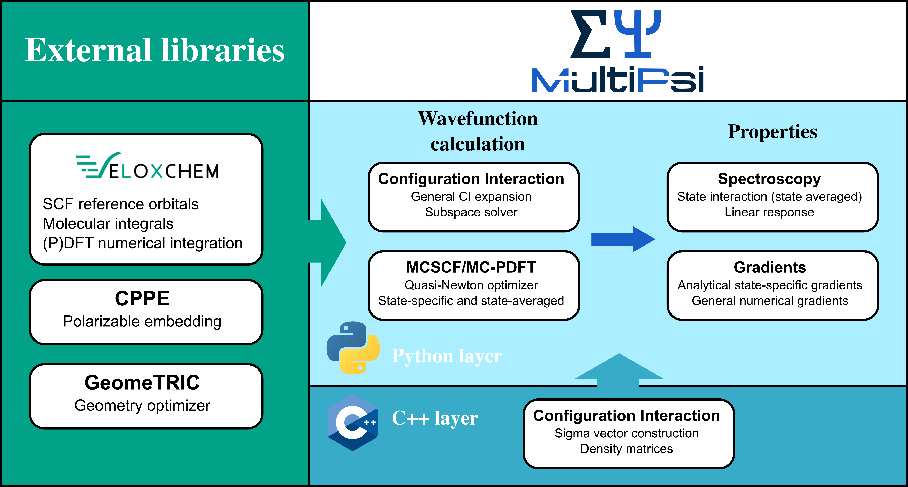

Getting started
Contents
Getting started#
Welcome to the eChem project!
This is a platform for interactive studies in computational chemistry based on Jupyter notebooks and the use of modern Python-driven electronic structure software.
The eChem book targets to a wide audience ranging from undergraduate students to experienced researchers, so depending on your background and interest you may benefit from different parts of the book:
For those new to Python and Jupyter notebooks, we a provide an example notebook which illustrates the basics of using such a framework, or you can look at other websites and tutorials.
When you are ready to try out things for yourself, you wish to consult the software installation guide.
If you want to see an example for using a Jupyter notebook for modeling a chemical reaction, you can look at an example workflow.
Every page of this book is a stand-alone Jupyter notebook that is readily downloaded to your local computer and modified and explored to answer questions raised by your own curiosity. Notebooks covering the underlying concepts and theory of computational chemistry are organized into parts covering
Basic electronic structure theory
Molecular structure and dynamics
Spectra and other properties
Environment
The final part of the book titled Tutorials and Workflows puts things together into comprehensive and topical presentations that are intended to be closer to actual research work.
Our vision#
Quantum chemistry is a powerful tool. It is now possible to model complex chemical processes even on a laptop getting insights into matter at its fundamental scale.
But quantum chemistry is also very complex. Answering a chemical question requires selecting parameters among a wide variety of choices. Choosing a model system, an electronic structure method, a basis set, a set of properties, and a wide array of parameters which can affect the results in small but sometimes meaningful ways… It can be a very daunting task, even for veterans of the field.
Similarly, for those who wish to get a deeper understanding of a method, going through the pages of equation often riddled with inconsistent notations and formulations is very challenging. And at the end, the link between the equation and the computer implementation found in existing softwares can be vague at best.
We believe that a core issue is that humans are not good at learning in abstract terms. We can get very far with a lecture or a textbook, but we will never build as much intuition about how a clock work as by simply breaking one apart and rebuilding it from scratch.
This is exactly the aim of this page, allowing a hands-on approach to computational chemistry. Together we will dismantle the black box that a computational chemistry code often seems to be, go through all the cogs and gears, and build back together some of the main computational methods of modern computational chemistry. We will do this by presenting the underlying equations, all expressed with consistent notations, as well as by suggesting a simple python implementation, to really display in action how the theory is implemented into a practical tool. Additionally, we will put these methods in context by showing how they can be used to address concrete chemical questions, discussing the strengths and weaknesses of each method and how to best use them to solve practical problems.
Who we are#
The group of people behind the eChem team is engaged in education and research activities in theoretical chemistry. As an integrated component of this work, we develop software for the simulation of complex molecular systems and this e-book lets you explore the fruits of these efforts. We have an overreaching vision and goal to provide:
A science- and education-enabling software platform for quantum molecular modeling on contemporary and future high-performance computing (HPC) systems, capable to meet the challenges of the EuroHPC project
Behind the term science-enabling there are a multitude of software requirements that we find important in our work, including
coverage of dense 3D system of sizes up to and beyond 500 atoms in the quantum region
accurate description of electronically excited states that show a more diffuse character than the ground state
stable and reliable convergence of iterative equation solvers also with use of diffuse basis sets
time-efficient prototyping of novel scientific approaches
transparent exposure of data structures to enable in-depth analyses for standard users
flexible ways to interact with other components of the simulation (such as molecular dynamics, parameterizing the embedding, and data visualization)
a fast return of results so as to remain in synchronicity with experimental project partners, enabled by an efficient, memory-conservative, hybrid MPI/OpenMP parallelization and SIMD vectorization in core software modules
The term education-enabling adds another set of software requirements to this already long list. In this context, the notion of deeper learning refers to taking each student’s understanding of the subject matter to another (deeper) level. Our experience tells us that the process of implementing methods to solve fundamental equations is supremely efficient as a means to achieve that type of deeper learning, but only a small number of students are granted this opportunity as many core modules of scientific software were written a long time ago and have often been made obscure by code optimization. What if we could instead offer access to the needed building blocks to explore quantum chemistry in very much the same manner that we can use the Python NumPy package to explore linear algebra?
Our software#
All the softwares used in these pages are freely available and easy to install, and can serve both as a development platform, with user-friendly python interface and easy access to all important variables needed to write a prototype quantum chemistry code, and as a modern and very efficient code to perform large-scale calculations on high performance computers.
VeloxChem#
VeloxChem [RLV+20] is a quantum chemistry program for the calculation of spectroscopic properties of molecular systems. It implements real and complex linear and nonlinear response theory at the level of Kohn–Sham density functional theory (DFT). The code is open source and may be downloaded from https://veloxchem.org, which also contains documentation and reference manual.
VeloxChem is designed with a C++ layer of highly optimized code for modern hardware infrastructures and a high-level Python layer that allows for ease of development and experimentation. The C++ layer uses hybrid parallel techniques using OpenMP within a multi-core node and MPI across nodes.
VeloxChem can be run either via input and output files as is the usual case in an HPC environment with job scheduling, as well as interactively via the Jupyter notebook. It has been designed to provide both a platform for high-performance scientific computing, as well as a platform for interactive quantum chemistry.
Gator#
Gator [RRH+21] is an open source quantum chemistry software which uses real and complex propagators at the correlated level of wave function theory to provide molecular properties and spectra. Its current capabilities include the Møller–Plesset (MP) perturbation theory for the ground state and the algebraic diagrammatic construction (ADC) level of theory for excited states. Written in a Python/C++ layered fashion, Gator can be run either in command line via input and output files, as well as interactively via the Jupyter notebook. It has been designed to provide both a platform for high performance scientific computing, as well as a platform for interactive quantum chemistry.
As illustrated in the figure, Gator requires a Hartree–Fock reference state that can be provided from VeloxChem. It then uses this reference state to generate perturbative corrections (ground state) and construct the ADC matrix at a specified order of perturbation theory (excited states). The excited states and related transition properties (excitation energies, oscillator strengths, absorption cross-sections, etc.) are obtained by diagonalizing the ADC matrix.
Adc-connect, or adcc for short, is a Python-based module of Gator which enables interactive ADC calculations via the jupyter notebook. adcc can also be used as a stand-alone code, taking the SCF referece state from veloxchem, pyscf, or psi4. The code capabilities include UV-vis, X-ray absorption and X-ray emission calculations at variuos ADC orders, up to ADC(3). Various excited state properties are available, including transition dipole moments, transition amplitudes, excited state dipole moments, and excited state gradients (to be included in the next release).
The HPC-QC module of Gator focuses on large-scale correlated calculations on HPC clusters. Based on Fock matrix-driven integrals transformation, the HPC-QC module enables MP2 and ADC(2) calculations in a fully distributed and parallel manner that makes efficient use of both the computational power and the aggregated memory on HPC systems. As such, ADC(2) calculations can be carried out efficiently on cluster nodes with only moderate amounts of memory. The HPC-QC module is written in pure Python.
Multi-Psi#
MultiPsi is a quantum chemistry program designed for multireference calculations with a special focus on spectroscopy. It currently implements a general configuration interaction solver and a multiconfigurational self-consistent field (MCSCF) method, as well as some properties, in particular spectroscopy using state-averaged MCSCF. It is also written in a Python/C++ layered fashion and interfaced on top of VeloxChem. It fits in the same design idea of offering a powerful platform for high performance scientific computing, as well as a platform for teaching and developing new methods. Some documentation is available at https://mgdelcey.github.io/mtpman/
Other tools#
geomeTRIC#
geomeTRIC is a geometry optimization python-based software which makes ues of the translation-rotation internal coordinates (TRIC) system. Other coordinate systems, such as delocalized internal coordinates (DLC), are also available. geomeTRIC requires an external software (such as Veloxchem or Gator) to provide the energy, gradient, and possibly Hessian, which are then used to carry out ground- or excited-state geometry optimizations, as well as transition state searches and vibrational analyses. Veloxchem includes optimization enegines which call geomeTRIC to perform structure relaxations in the ground or excited state. Additionally, analytical Hessians (or numerical Hessians based on the analytical gradient) are provided to geomeTRIC to determine vibrational frequencies and normal modes.
xTB#
The extended tight-binding (xTB) program package uses a semi-empirical model for rapid calculation of structures and noncovalent binding energies.
OpenMM#
OpenMM is a high-performance toolkit for molecular simulation, with a focus on extensibility and flexibility.